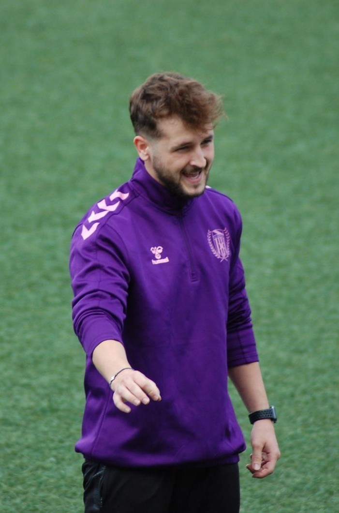

Gabriel Rovira Carrascosa
Encantado de conocerte, soy Gabi, psicólogo deportivo y clínico, especializado en alto rendimiento, mental coaching, liderazgo y análisis psico-corporal.
Acompaño a personas muy diferentes entre sí: futbolistas que compiten al máximo nivel, jóvenes que sueñan con lograrlo, y personas que simplemente quieren vivir con más calma y sentido. Para eso, comparto una misma idea: conocerte en profundidad es el primer paso para transformar tu vida.
Creo firmemente, como decía Viktor Frankl, que la vida se vuelve insoportable cuando perdemos el sentido. Por eso, mi trabajo consiste en ayudarte a construir una mente más fuerte, flexible y consciente, capaz de sostener tanto la presión competitiva como los retos personales del día a día.
Mi filosofía de trabajo se resume en seguir adelante ¿Por qué? Porque te mereces descubrir qué ocurre cuando todo tu esfuerzo da sus frutos. Una persona o un deportista imparable sabe que su desarrollo no tiene techo y que la verdadera victoria no es ganar siempre, sino aprender de cada reto.
Este espacio de psicología deportiva, psicoterapia y desarrollo personal está pensado para deportistas, entrenadores y personas comprometidas con sacar todo su potencial y encontrarse con la mejor versión de sí mismos.
Consulta todas las especialidades